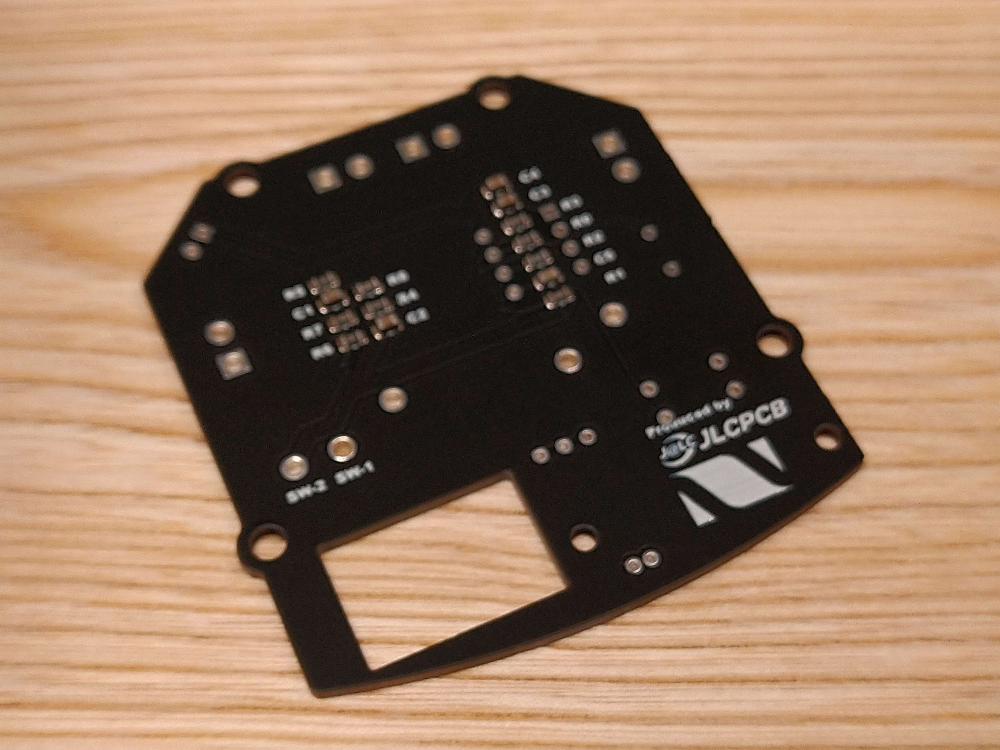
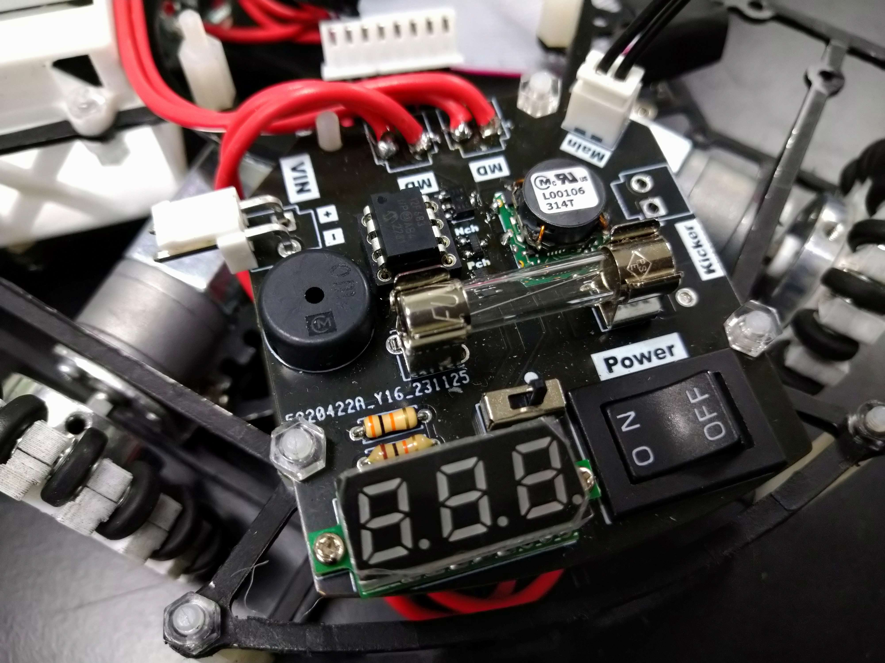

TOINIOT² Blog
電源、大事、マジで。
2023-12-12 Writer: 010
今回も前回に引き続き基盤発注のお話。注文先は毎度おなじみJLCPCB様です。はじめてTOINIOT²のブログを見てくれる方の中には、JLCPCB...?と思う人もいるかもしれませんので（いや、みんな知ってますよね！めっちゃ有名です！すごい企業です！（圧））ここで説明しておくと、
JLCPCBは主に基板の製作をしている会社です。基板製作？っていう方は技術の授業を思い出してみてください。教科書の片隅に「エッチング」って載っていませんでしたか。そう、あれです。あれをもっと本格的にやってくれるのがJLCPCBというわけです。でもそれだけではありません。例えば3Dプリント。家庭用の3Dプリンターでは到底造形できないような複雑な形のものも難なく作ってくれます。詳しくはこちらをご覧ください。ほかにもCNC加工など、いろいろありますが詳しくは以下を参考に！
↓ JLCPCB様のホームページ
 https://jlcpcb.com/JPV
https://jlcpcb.com/JPV
ではここからは、実際に頼んだものについて紹介していきます。まずは写真をご覧ください。

なんか大きな穴が開いてますね（笑）まぁそれは後で触れるとしてこれは「電源基板」です。主な用途はバッテリーから流れてきた電気をモーターやCPUなど使用箇所に合わせて変圧したり、万が一電圧系統に異常が起きた際にはヒューズを用いて直ちに遮断すること。

ここまで概要を説明してきましたが、あれっ？と思った人、そうです！
この基板、めーーーーーーーーっちゃ重要なんです。もしもエッチングで作って使用時にショートでもしたら...。想像するだけでぞっとします。
要は、絶対に失敗は許されない！そこで登場するのがJLCPCB様。冒頭でもお話ししましたが、JLCPCBの最大の魅力は「確実」なものを「早く」「安く」提供してくれるということ。商品自体は $1 から発注可能。海外に工場があるのに、空輸とはいえ発注から2週間かからずでの到着はかなり魅力的です。もちろん、確立された機械生産により、不良品にあたる可能性は飛行機の墜落事故にあたるより低いです！（この点に関しては個人の感想ですのであしからず）
と、ここまで長々と書いてきましたが、僕が伝えたいのはただ一つ。JLCPCB様、いつもありがとうございます。これからもよろしくお願いします！皆さんもぜひ使ってみてください！（ひとつとは...？）
↓ 今ならクーポンゲットのチャンス！
https://jlcpcb.com/JPV